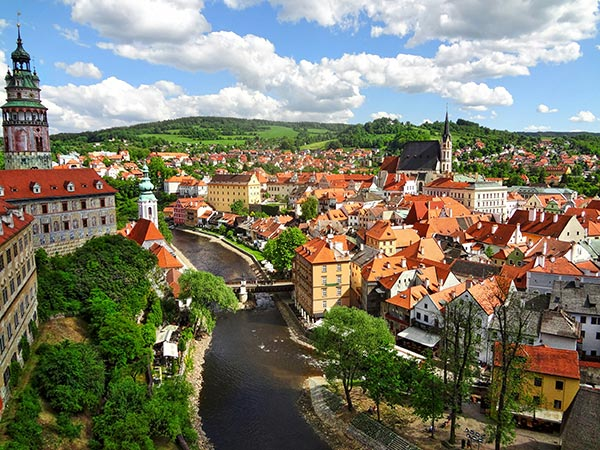
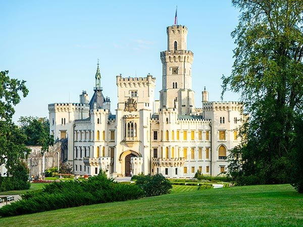
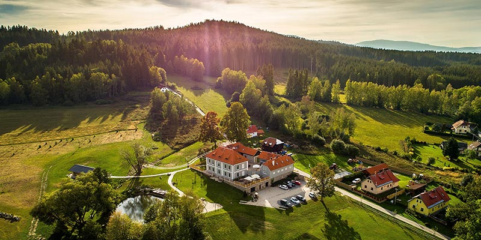

Objevte kouzlo jižních Čech
Autor: Chad Gipiti, vydáno 20.2.2025
Jižní Čechy jsou domovem řady památek, které uchvacují návštěvníky svou historií i jedinečnou atmosférou. Region nabízí nejen malebná města s bohatou kulturní tradicí, ale také nádherné přírodní scenérie, kde se můžete odreagovat od ruchu každodenního života. V tomto článku se podíváme na některá z nejatraktivnějších míst, mezi která patří Český Krumlov, Hluboká nad Vltavou, Třeboň a Národní park Šumava.
Historie a kultura na každém kroku
Český krumlov
Město Český Krumlov, zapsané na seznamu světového dědictví UNESCO, je bezesporu jednou z nejkrásnějších historických lokalit v České republice. Jeho úzké uličky, impozantní zámek a malebná řeka Vltava vytvářejí prostředí, do kterého se zamiluje každý návštěvník. Procházka starým městem vás zavede zpět do doby renesance a baroka, kdy se zde rodily příběhy, které dodnes inspirují umělce a spisovatele.
Hluboká nad Vltavou
Hluboká nad Vltavou je synonymem pro romantický zámek, který svou impozantní architekturou a upravenými zahradami přitahuje tisíce turistů. Tento zámek, inspirovaný anglickým stylem, je skvělým příkladem, jak se historie a moderní komfort mohou krásně prolínat. Návštěva Hluboké je nejen cestou do minulosti, ale také oslavou estetické dokonalosti a precizního řemesla.
Zámek Hluboká, situovaný v malebném městě Hluboká nad Vltavou, patří mezi nejznámější a nejnavštěvovanější památky České republiky. Jeho příběh se začal psát už ve středověku, kdy původní gotická pevnost sloužila k ochraně území. V 19. století prošel zásadní proměnou pod patronátem rodu Schwarzenbergů a dostal podobu romantického zámku inspirovaného anglickou architekturou.
Uvnitř zámku Hluboká nalezneme bohatě zdobené sály a komnaty, jejichž interiéry odhalují luxus aristokratické minulosti. Místnosti jsou vyzdobeny cennými malbami, tapiseriemi a originálním nábytkem, který byl vybrán s maximálním důrazem na detail a kvalitu. Každá místnost má svůj jedinečný příběh a návštěvníka zve k objevování nejen architektonických skvostů, ale i kulturních tradic, které se v průběhu staletí formovaly.
Přírodní krása a odpočinek
Národní park Šumava
Pokud toužíte po útěku do přírody, pak je návštěva Národního parku Šumava nezbytná. Tento rozsáhlý chráněný prostor nabízí návštěvníkům jedinečné lesy, rašeliniště, horské louky a malebné výhledy. Ideální je například jižní část parku, kde se můžete vydat na klidné túry a obdivovat bohatou flóru a faunu. Šumava je synonymem pro ekologickou rovnováhu a nabízí skvělé možnosti pro aktivní i pasivní odpočinek v srdci nedotčené přírody.
Park se pyšní rozsáhlými lesy, horskými loukami, rašeliništi a řadou vodních útvarů - od malebných jezírek až po křišťálově čisté potoky. Tato pestrá krajina podporuje rozmanitost druhů, mezi nimiž naleznete vzácné rostliny i chráněné živočišné druhy, jako jsou medvědi, rysy nebo vlci. Oblast mokřadů je mimořádně cenná, protože zde dochází k přirozeným procesům obnovy a udržení rovnováhy v ekosystému.
Návštěvníci národního parku si mohou vybrat z množství značených turistických stezek, cyklostezek a vyhlídkových tras. Tyto cesty umožňují nejen aktivní pohyb, ale také hlubší poznání jedinečné flóry a fauny parku. V zimním období se park promění v atraktivní destinaci pro lyžaře a běžkaře, což zaručuje, že si každý najde to své. Mnohá informační centra poskytují exkurze a workshopy, které návštěvníkům přibližují ekologické procesy a význam ochrany přírody.